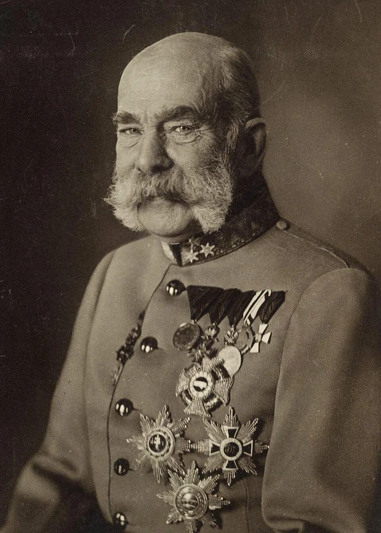

ฟรานซ์ โจเซฟ ที่ 1 (Franz Joseph I)

สมเด็จพระจักรพรรดิฟรันทซ์ โยเซ็ฟที่ 1 แห่งออสเตรีย ทรงเป็นผู้มีบทบาทสำคัญในการอนุมัติคำขาดและประกาศสงครามต่อเซอร์เบีย ซึ่งเป็นชนวนเหตุสำคัญที่จุดประกายให้ สงครามโลกครั้งที่ 1 ปะทุขึ้นในปี ค.ศ. 1914บทบาทสำคัญในช่วงสงครามโลกครั้งที่ 1การลอบปลงพระชนม์อาร์ชดยุค: เมื่อวันที่ 28 มิถุนายน ค.ศ. 1914 อาร์ชดยุคฟรานซ์ เฟอร์ดินานด์ พระราชนัดดาและรัชทายาท ถูกลอบปลงพระชนม์ที่เมืองซาราเยโวโดยชาตินิยมเซอร์เบียการยื่นคำขาด: พระองค์ทรงเห็นชอบให้รัฐบาลออสเตรีย-ฮังการีส่งคำขาดที่รุนแรงไปยังเซอร์เบีย ซึ่งออกแบบมาให้เซอร์เบียไม่สามารถยอมรับได้ทั้งหมด เพื่อใช้เป็นข้ออ้างในการทำสงครามการประกาศสงคราม: เมื่อเซอร์เบียปฏิเสธเงื่อนไขบางข้อ พระองค์จึงทรงลงพระปรมาภิไธย ประกาศสงครามกับเซอร์เบีย ในวันที่ 28 กรกฎาคม ค.ศ. 1914 ส่งผลให้ระบบพันธมิตรในยุโรปทำงานและลุกลามกลายเป็นสงครามโลกการนำพาจักรวรรดิเข้าสู่สงคราม: พระองค์ทรงนำ จักรวรรดิออสเตรีย-ฮังการี เข้าร่วมกับฝ่ายมหาอำนาจกลาง (ร่วมกับเยอรมนี)